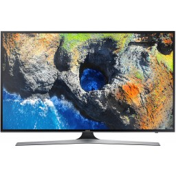

Телевизор DEXP H19D7100E/W
Краткое описание товара
LED-телевизор DEXP H19D7100E/W с диагональю экрана 19 дюймов (48 см) — идеальная модель для небольших комнат дома или кухни. При своих компактных размерах и небольшом весе (2.35 кг с подставкой) она может располагаться на стене либо на горизонтальных поверхностях. Белый корпус телевизора смотрится свежо и оригинально. При этом экран обладает высоким показателем разрешения (1366×768) и относится к стандарту HD 720p.
Описание товара
LED-телевизор DEXP H19D7100E/W с диагональю экрана 19 дюймов (48 см) — идеальная модель для небольших комнат дома или кухни. При своих компактных размерах и небольшом весе (2.35 кг с подставкой) она может располагаться на стене либо на горизонтальных поверхностях. Белый корпус телевизора смотрится свежо и оригинально. При этом экран обладает высоким показателем разрешения (1366×768) и относится к стандарту HD 720p. Частота обновления изображения в 75 Гц сочетается с контрастностью 1000:1 и яркостью 200 кд/ м². Благодаря углам обзора 178° / 178° по вертикали и горизонтали наблюдать за происходящим на экране можно из любой части комнаты. Модель с мощностью звука в 10 Вт обладает объемным звучанием. Прибор имеет опцию телетекста и набор цифровых тюнеров, позволяющих использовать все возможности прогрессивного телевидения. Опция воспроизведения файлов с внешних носителей способствует тому, что вы можете смотреть любимые фильмы и сериалы когда захочется. DEXP H19D7100E/W имеет опцию записи видео и функцию «TimeShift».
Характеристики товара
| Наименование | Значение |
| Диагональ экрана (дюймы): | 19″ |
| Разрешение экрана: | 1366×768 (HD) |
| Частота обновления экрана: | 75Гц |
| Цифровые тюнеры: | DVB-T2, DVB-C |
Комплектация
- документация